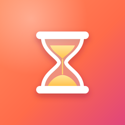

TikoTiko Kinderzeit gibt Eltern die Kontrolle über die Bildschirmzeit – ohne Schlupflöcher, ohne Abo-Falle und mit einer Ansicht, die Kinder gern anschauen.
Viele Kindersicherungen wollen alles können und werden dadurch kompliziert. Tiko konzentriert sich auf das, was im Familienalltag zählt.
Ist die Zeit aufgebraucht, kann dein Kind direkt auf dem Sperrbildschirm fragen. Du bekommst eine Mitteilung und tippst einfach auf die Antwort.
Tiko nutzt Apples offizielle Bildschirmzeit-Technik. Regeln und Nutzungszeiten liegen nur auf euren Geräten und in der iCloud eurer Familie. Wir haben darauf keinen Zugriff.
Zum Ausprobieren gibt es eine kostenlose Basis. Tiko Familie schaltet alles frei – ein Kauf gilt über die Familienfreigabe für die ganze Familie.
Monatlich, jährlich oder einmalig – ohne Abo-Falle.
Voraussetzungen: iOS/iPadOS 16 oder neuer, dein Kind ist in eurer Apple-Familienfreigabe eingetragen.